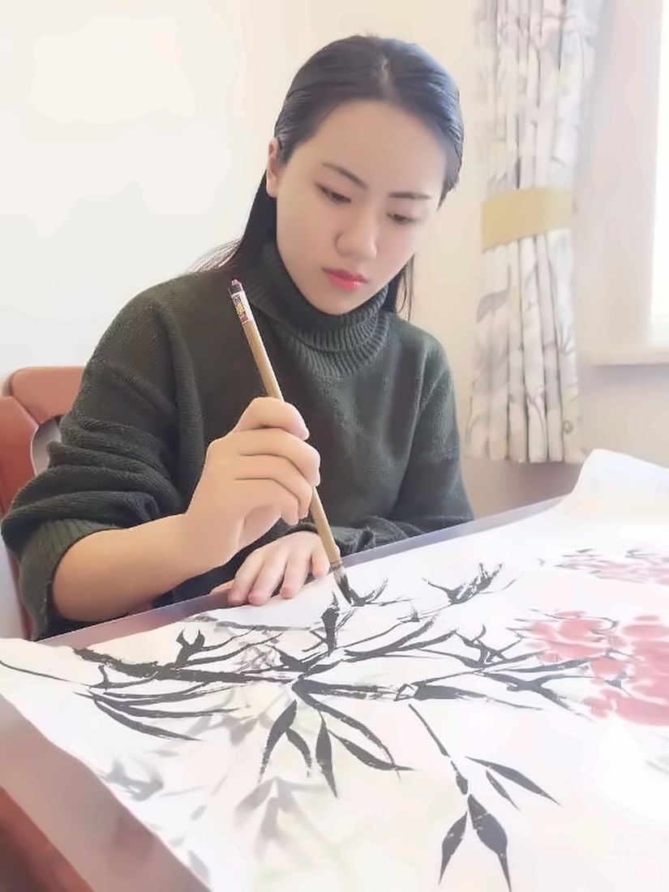
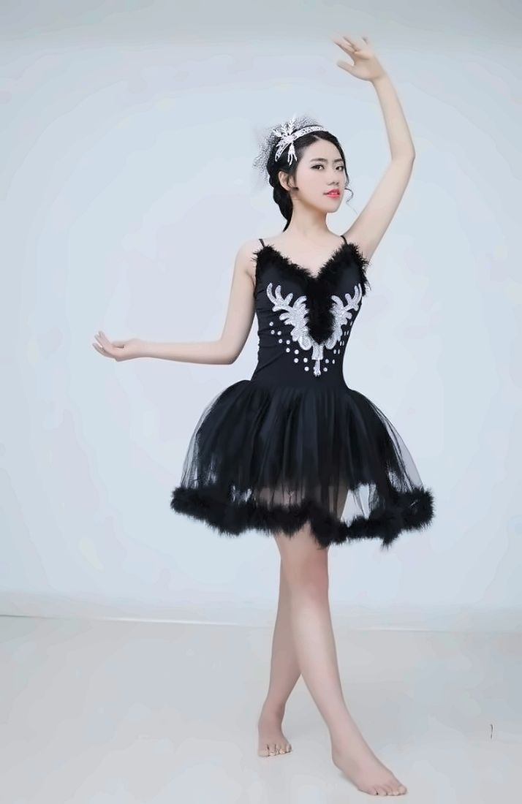

On the 2026–27 academic job market
I am a PhD candidate in Finance at Vrije Universiteit Amsterdam and the Tinbergen Institute, supervised by Iman van Lelyveld and Tanja Artiga Gonzalez. I expect to complete my PhD in August 2027.
My research interests are in empirical corporate finance, particularly innovation and sustainable finance. I study how firms acquire and finance green technologies. My job market paper examines how delays in patent examination affect firms' decisions to purchase green patents. I also work on shareholder engagement, banking supervision, and banks' responses to monetary policy.
During my PhD, I have been a visiting student at Stockholm University, hosted by Gustav Martinsson, and a research visitor at the Dutch Central Bank (De Nederlandsche Bank). I hold an M.Sc. in Financial Econometrics from Johns Hopkins University.
Outside research I paint in the Chinese bird-and-flower tradition, play the pipa and dance ballet. Some of my paintings are on the Personal page.
- Research fields
- Empirical corporate finance, innovation, sustainable finance, corporate governance, banking, machine learning
- PhD expected
- August 2027
- Placement director
- Prof. Eric Bartelsman (e.j.bartelsman@vu.nl)
- Placement assistant
- Christina Mansson, Tinbergen Institute (c.mansson@tinbergen.nl)
- x.yuan@vu.nl
Job market paper
Knowledge Without Control: Examination Delay and Green-Patent Acquisitions
When examination of their own green patent applications is delayed, firms whose product-market rivals file in the same technology class become much more likely to buy green patents.
Job market paper
Knowledge Without Control: Examination Delay and Green-Patent Acquisitions
Job market paperAbstract
I study how delays in patent examination affect firms' purchases of green patents. I instrument the share of a firm's green applications still awaiting a first substantive office action eighteen months after filing with examiners' delay tendencies on other applicants' cases. Among firms facing product-market rivals filing in the same technology class, a one-standard-deviation increase in delay raises the probability of an acquisition in the following twelve months by 11.7 percentage points, against a base rate of 16.3%. The response is significantly stronger than among firms without such rivals. Evidence on the legal status and technological proximity of acquired patents is consistent with a legal-protection motive, although it does not rule out complementary knowledge acquisition. The findings show how patent examination and competitive exposure shape firms' demand for external patent rights.
Publications
Green Gains: The Impact of REITs' Environmental Performance on Sustainability-Linked Loan Interest Rates
Working papers
Cross-Lender Signals and the Timing of Credit Loss Recognition
Central Bank Reserves and Bank Stock Returns around ECB Decisions
Grouping the State: Reporting Boundaries and Exposure Concentration
Private Engagement, Public Votes: Evidence from Shareholder Engagement Disclosures
Green Patents as Collateral
Presentations
- Annual Meeting of the Swiss Society for Financial Market Research (SGF), Zurich2026
- International Risk Management Conference, Bari2025
- PhD Seminar, Vrije Universiteit Amsterdam2024
Teaching
Vrije Universiteit Amsterdam
- Finance · Undergraduate2022–2026
- Bachelor Thesis Supervision · 55 theses2022–2026
- Stochastic Processes: the Fundamentals · Master2025, 2026
- Corporate Finance: Theory and Empirics · Master2024
Johns Hopkins University
- Financial Modeling and Valuation · Master2022
Interests
Outside research I paint in the Chinese bird-and-flower tradition, play the pipa and dance ballet.

